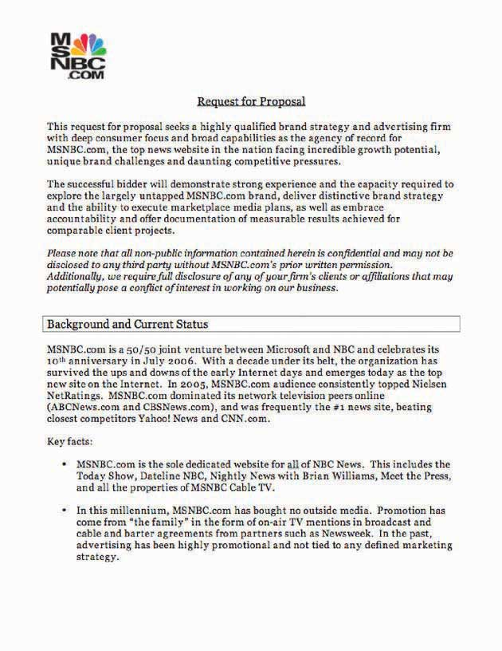
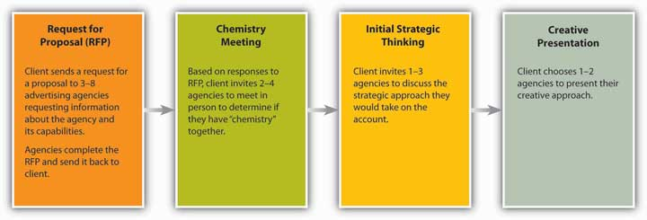

After studying this section, students should be able to do the following:
How does the client decide which agencies to work with? It all starts with the pitchProcess in which a client invites an agency to present itself with the hope of winning the account., where the client invites an agency to present itself with the hope of winning the account. Once a client decides on a list of agencies to pitch their business, it may send these agencies a request for proposal (RFP)Communication to agencies in which the client lays out basic information about its business and requirements for the job.. In an RFP, the client lays out basic information about its business and requirements for the job, along with a list of questions that will help the client determine how the agencies work and if they are suited to the task at hand.
In some cases, agencies may approach clients they feel would be a good match for their talents or would add depth or luster to their roster. Alternatively, when agencies are well known for a particular campaign or approach, clients will seek them out. However, just as when an individual is searching for work, word of mouth and personal relationships play an important role in the process. It’s not just what you know, it’s who you know.
The client’s stake in agency pitches is high: management’s jobs, the brand’s future, and millions of dollars may ride on the campaigns the winning agency creates. For example, in 2007, despite having spent over $900 million on marketing that year, Microsoft was not performing well against competitors such as Google and Apple. Identifying a key need to boost market share, the software giant embarked on a search for a new agency to enhance its brand image. By February of 2008, Microsoft had narrowed its search to two agencies; it then chose Crispin Porter + Bogusky for a new $200–300 million “consumer blitz.”Rupal Parekh and Alice Z. Cuneo, “Microsoft Narrows to Crispin, Fallon,” Advertising Age, December 21, 2007, http://adage.com/agencynews/article?article_id=122776 (accessed July 16, 2008).
Just as the client invests large sums in the advertising campaign, the costs for agencies also are enormous, whether or not they win the business. In order to pitch effectively, the agency must allocate material resources and a tremendous number of team hours to meetings, research, and creation of the pitch. Sometimes, when the assignment, chemistry, or timing isn’t right, it’s just good business for the agency to walk away and leave millions of dollars in potential billings on the table.
That’s what happened in 2006, when GSD&M (now known as GSD&M Idea City)’s nineteen-year relationship with its client Wal-Mart was challenged in a client-initiated review for their business. In one of the first review meetings the incumbent agency had with its longstanding client, GSD&M agency president Roy Spence played a clip from the movie Dumb and Dumber, in which the romantically challenged character played by Jim Carrey is told by the girl of his dreams the chances they will be together are one in a million. Carrey replies, “So…you’re telling me there’s a chance?”“Wal-Mart, Please Don’t Leave Me,” Business Week, October 9, 2006, http://www.businessweek.com/magazine/content/06_41/b4004076.htm (accessed July 16, 2008).
Spence’s attempt at lightheartedness hid a hard truth: there was no salvaging the relationship. GSD&M was unsuccessful in its pitch for the business, which included a poorly received report suggesting that Wal-Mart’s declining reputation was at the root of its struggle for higher share prices. In an interesting turn of events, the agency that “won” the business, Draft FCB/Chicago, was dropped in a matter of months, and Wal-Mart once again invited GSD&M to pitch its business. This time, GSD&M swallowed hard and passed on a chance at the $580 million assignment. Like the song goes, you gotta know when to hold ’em and know when to fold ’em.
Marketers who work on the brand for the client are the ones who initiate the pitch process when they make the decision that they would like to search for an agency. The person within the organization who generally leads the search is the chief marketing officer or the vice president of marketing.
Some marketers choose to partner with a search consultancy whose job is to conduct the search. They use different methods to determine which agencies are the most appropriate fit for their client’s pitch. They also work as liaisons between the client and the competing agencies to handle questions and logistics and to structure the pitch.
The pitch process can be short or long, depending on the information the client requests in order to make the decision. There is usually a series of steps, including but not limited to these:
Figure 1.8 The msnbc.com RFP
This is the first page of the RFP that msnbc.com sent to SS+K and other agencies.
Figure 1.9 The Pitch Process
How do agencies demonstrate to clients they are the right choice for the job? In a recent interview well-known account planner Jon Steel noted, “I have always believed that the best new business weapon in an agency’s armory is the quality and effectiveness of the work it produces for its existing clients.” However, another way that agencies have demonstrated their creative ability is to present “spec” (speculative) creative work in pitches. Spec workPreliminary ideas based on the agency’s best guess as to what might appeal to and work best for a client and presented in a form that is very close to “finished.” is developed based on the agency’s best guess as to what might appeal to and work best for a client and presented in a form that is very close to “finished.”
The problem with spec work is that many in the industry feel it devalues skills such as design, art direction, and copywriting—as it forces agencies to give away for free (or at a substantially reduced cost) their most valuable product: their creativity. In the end, ownership of the ideas presented during pitches can be contested; clients who have had a number of agencies pitch creative work have been known to pick and choose among the best of all the pitching agencies’ ideas while awarding the business to just one. As a result, the American Association of Advertising Agencies (AAAA) created a Positioning Paper outlining best practice guidelines for the use of “spec” creative in the new business process: http://www.aaaa.org/eweb/upload/6712_att.pdf.
What’s your opinion? Should agencies be compensated for “spec” work even if they don’t win the account?
You can’t work on an account until you’re awarded the business. To win a client you have to present a pitch, usually along with several other agencies. Although the client doesn’t (or shouldn’t) expect to see a finished campaign, it will look for evidence that your team has put a lot of creative thought and effort into fleshing out its vision of what the advertising will look like. Preparing a pitch can be an expensive, grueling, and nail-biting experience, so an agency shouldn’t throw its hat into the ring unless it’s willing to make a commitment to go all out in order to win the business.